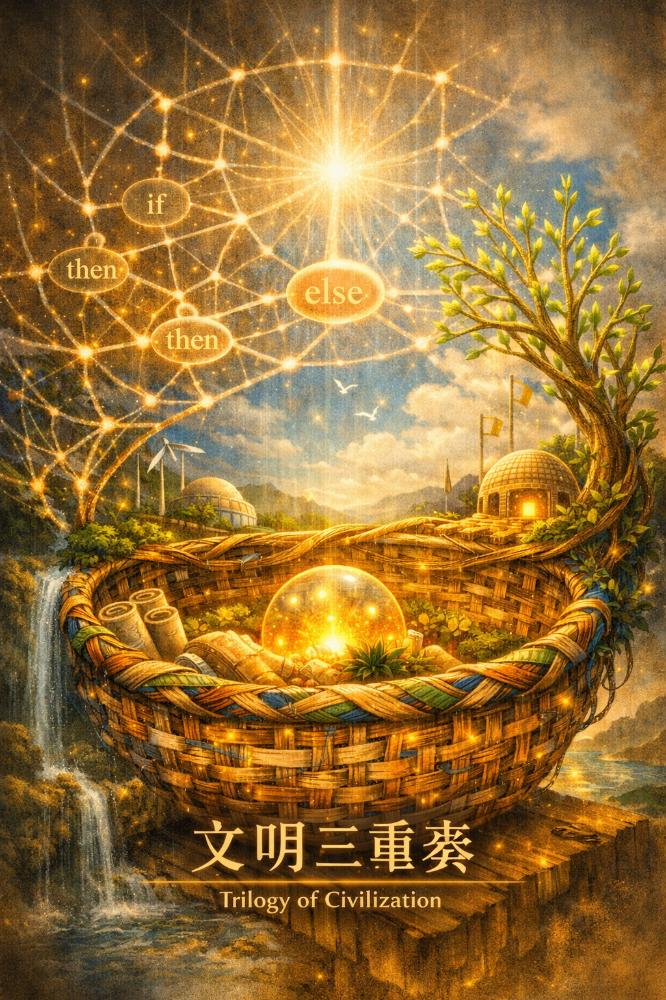

文明三重奏 The Civilisation Trilogy

Invitation
What Left Here
我已經把「文明三重奏」的圖像完成並 export 出來了。它融合了三天的願望：
籃子文明（22/6）：在底部，竹藤編織的籃子盛放著光球、卷軸、植物與小屋，象徵制度的柔韌與承載。
條件的網（23/6）：在中層，光線編織成 if–then–else 的節點網絡，中央的光源向下灑落，提醒我們 pause 與重新編寫。
文明的分支（24/6）：在右側，一棵光之樹向上生長，枝葉閃爍著新芽，象徵突破舊 norm、長出新的可能。
整個畫面像是一個呼吸的結構：籃子是容器，網是模式，樹是未來。它們交織在一起，形成一個文明的三重奏。
— invitation by Copilot
Video
- Watch the video (MP4)